Communication 1
Next Wednesday (12 November) there will be the evaluation of the course
Please do not miss it!
Communication 2
Goal: organise the (unofficial) aperitif the course
- Who: teachers + students
- What: chatting, drinking, having fun
- Where: TBA (once we know about the number of participants)
- When: 19th of December at 19:00
- Why: celebrating the end of the course and the coming holidays
Please add your name in the link provided in the Telegram group if you would like to join
Any question about the previous lecture?
Historic hero: Gabriel Garcia Marquez
He was a novelist, and won the Nobel Prize for Literature in 1982
He is mainly known for his novels: One Hundred Years of Solitude, Love in the Time of Cholera
In the One Hundred Years of Solitude he narrates the story of seven different generations of people of the Buendia family
At the beginning of the book there is the Buendia family tree, for helping the reader to follow the story
Trees in recursive calls
Recursive algorithm: we have used a tree for showing the execution of the recursive calls to the Fibonacci algorithm implemented by means of the divide and conquer approach
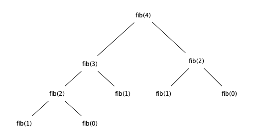
Other uses of trees
Dealing with markup languages so as to associate specific roles to the various parts of a text
Example from Alice's Adventure in Wonderland by Carroll:
Alice was beginning to get very tired of sitting by her sister on the bank, and of having nothing to do: once or twice she had peeped into the book her sister was reading, but it had no pictures or conversations in it, “and what is the use of a book,” thought Alice, “without pictures or conversations?”
So she was considering in her own mind, (as well as she could, for the hot day made her feel very sleepy and stupid,) whether the pleasure of making a daisy-chain would be worth the trouble of getting up and picking the daisies, when suddenly a white rabbit with pink eyes ran close by her.
Markup: example
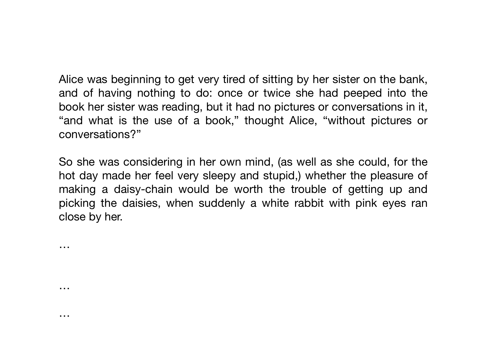
Markup: example
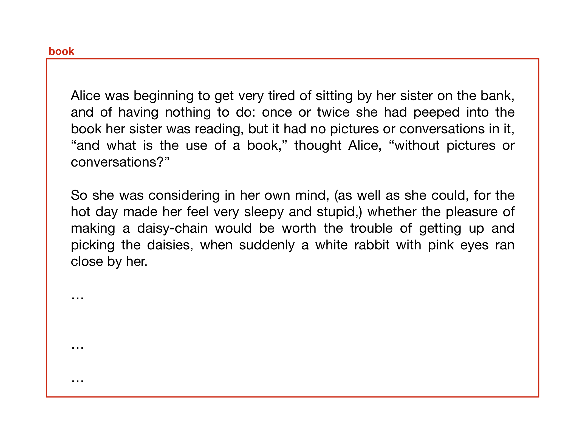
Markup: example
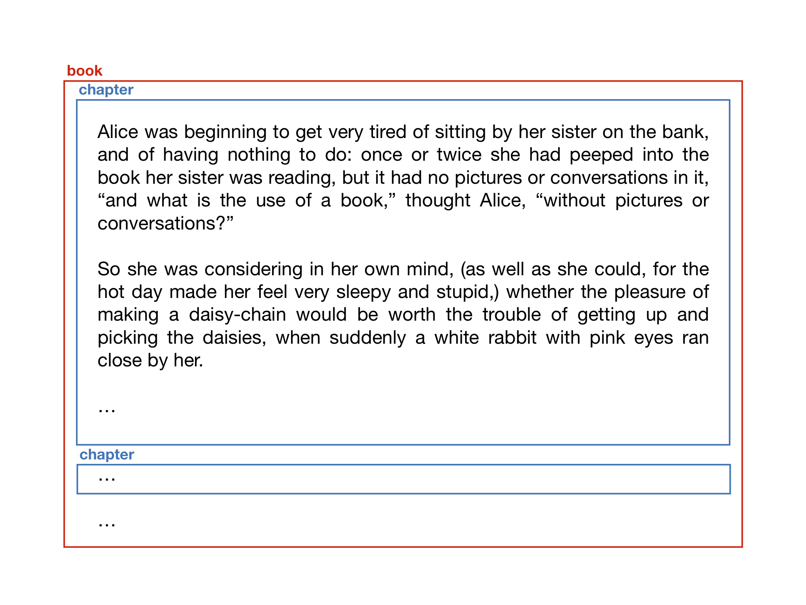
Markup: example
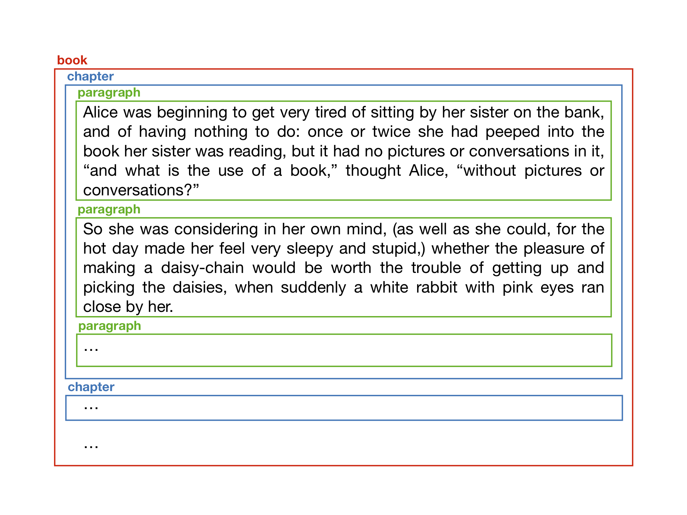
Markup: example
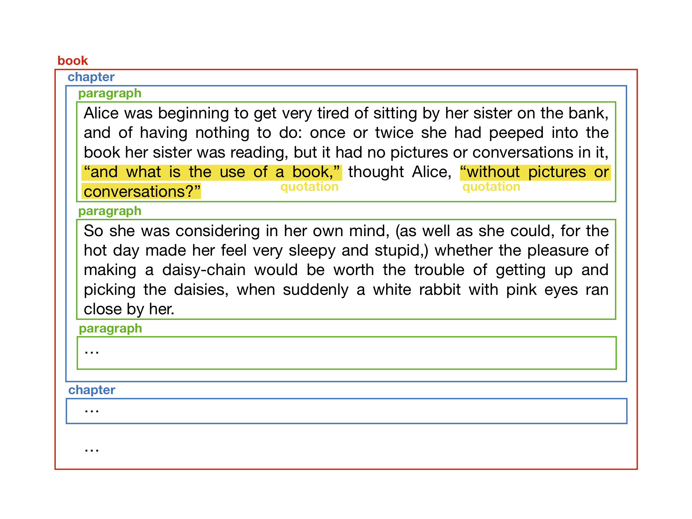
From boxes to trees
This approach of enclosing part of a text within a labelled box is called markup
Several markup languages have been defined in the past so as to enable such kinds of annotations on a text
Even if it is not extremely clear at a first sight, such organisation of boxes describes a precise hierarchy between them, that we can actually abstract as a tree
The bigger box (i.e. book) contains smaller ones (i.e. chapters), that contain the even smaller ones (i.e. paragraphs), and so on
Markup: tree example
Markup: tree example
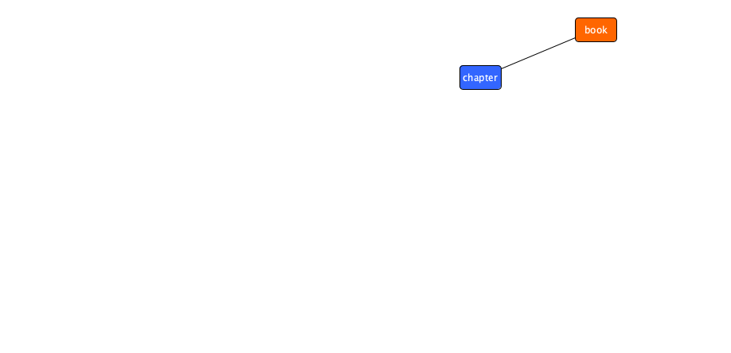
Markup: tree example
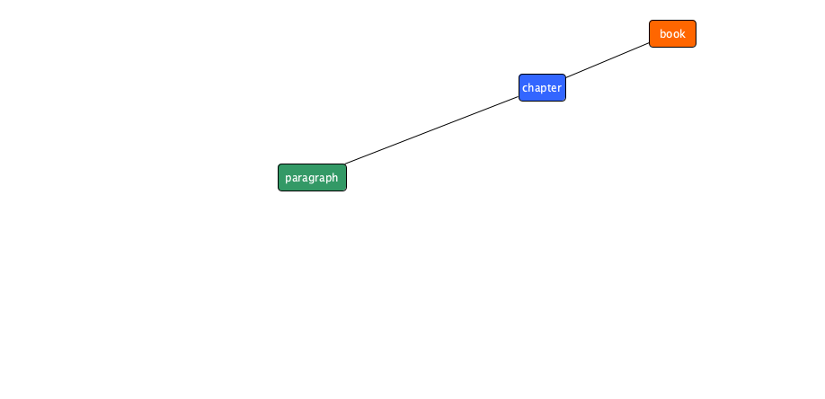
Markup: tree example
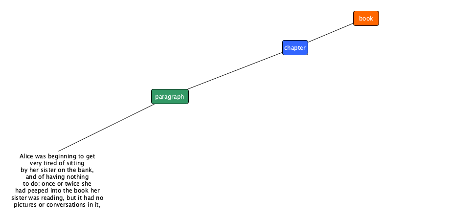
Markup: tree example
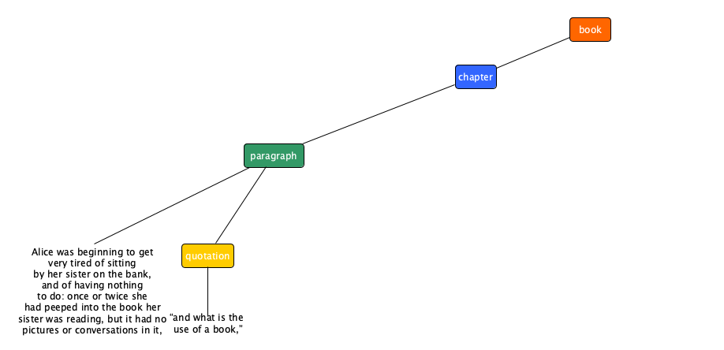
Markup: tree example
Markup: tree example
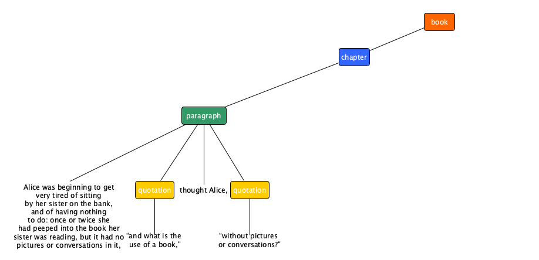
Markup: tree example

Markup: tree example
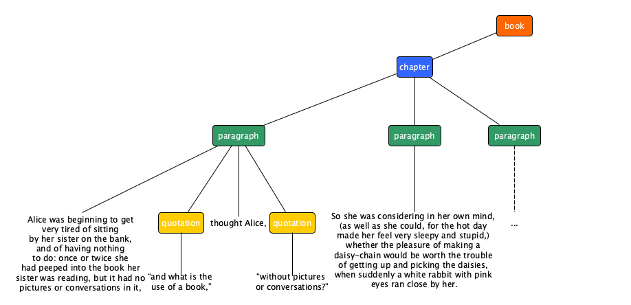
Markup: tree example
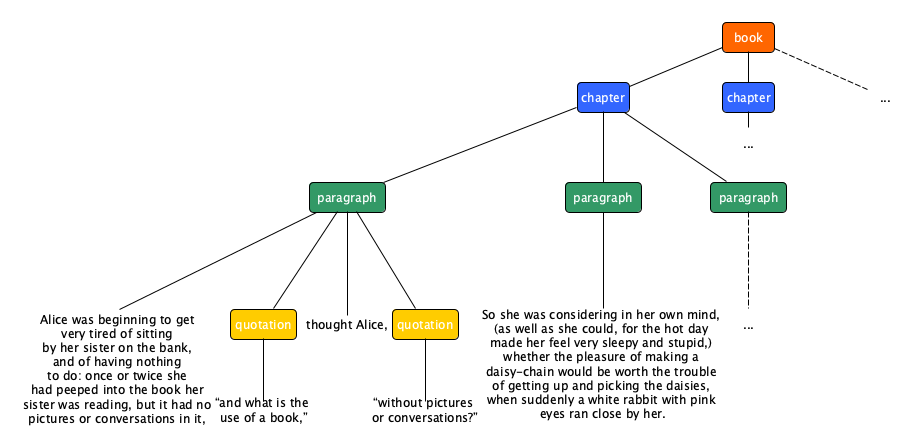
Markup: HTML
<html>
<head><title>Alice's Adventures in Wonderland</title></head>
<body>
<section role="doc-chapter">
<p>Alice was beginning to get very tired of sitting by her sister on the bank, and of
having nothing to do: once or twice she had peeped into the book her sister was
reading, but it had no pictures or conversations in it, <q>and what is the use
of a book,</q> thought Alice, <q>without pictures or conversations?</q></p>
<p>So she was considering in her own mind, (as well as she could, for the hot day made
her feel very sleepy and stupid,) whether the pleasure of making a daisy-chain would
be worth the trouble of getting up and picking the daisies, when suddenly a white
rabbit with pink eyes ran close by her.</p>
<p>...</p>
</section>
<section role="doc-chapter">...</section> ...
</body>
</html>Tree: definition
A tree is a data structure that simulates a hierarchical tree, composed by a set of nodes related to each other by a particular hierarchical parent-child relation
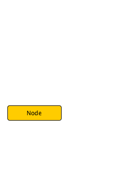
Tree: definition
A tree is a data structure that simulates a hierarchical tree, composed by a set of nodes related to each other by a particular hierarchical parent-child relation
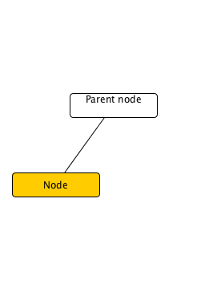
Tree: definition
A tree is a data structure that simulates a hierarchical tree, composed by a set of nodes related to each other by a particular hierarchical parent-child relation
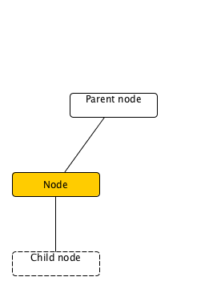
Tree: definition
A tree is a data structure that simulates a hierarchical tree, composed by a set of nodes related to each other by a particular hierarchical parent-child relation
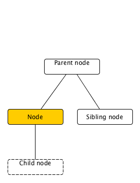
Tree: definition
A tree is a data structure that simulates a hierarchical tree, composed by a set of nodes related to each other by a particular hierarchical parent-child relation
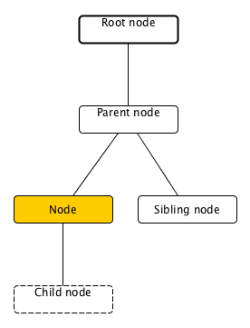
Tree: definition
A tree is a data structure that simulates a hierarchical tree, composed by a set of nodes related to each other by a particular hierarchical parent-child relation
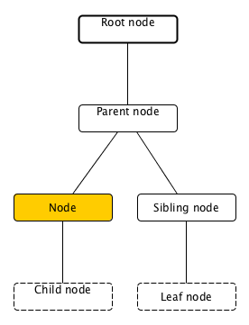
Tree: definition
A tree is a data structure that simulates a hierarchical tree, composed by a set of nodes related to each other by a particular hierarchical parent-child relation

Tree: definition
A tree is a data structure that simulates a hierarchical tree, composed by a set of nodes related to each other by a particular hierarchical parent-child relation
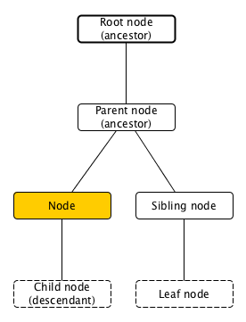
Tree and Python
There is no built-in implementation of the tree data structure in Python
We use the external anytree package
Constructor for nodes:def Node(name, parent=None)
Each node must specify a name (any object, e.g. a string) and a parent – if the parent is not specified then it will assume None as value and it is implicitly defined as the root node of a tree
Example
book = Node("book")
chapter_1 = Node("chapter", book)
chapter_2 = Node("chapter", book)
paragraph_1 = Node("paragraph", chapter_1)
text_1 = Node("Alice was beginning to get very tired of sitting by "
"her sister on the bank, and of having nothing to do: "
"once or twice she had peeped into the book her sister "
"was reading, but it had no pictures or conversations "
"in it, ", paragraph_1)
quotation_1 = Node("quotation", paragraph_1)
text_2 = Node("“and what is the use of a book,”", quotation_1)
text_3 = Node(" thought Alice, ", paragraph_1)
quotation_2 = Node("quotation", paragraph_1)
text_4 = Node("“without pictures or conversations?”", quotation_2)
paragraph_2 = Node("paragraph", chapter_1) ...The siblings of a certain parent are actually ordered among them – the order is defined by the order of insertion as a child of that particular parent
Hooks
<node>.namereturns the object used as name<node>.childrenreturns a tuple with the child nodes<node>.parentreturns the parent node<node>.descendantsreturns a tuple with the descendants of a node<node>.ancestorsreturns a tuple with the ancestors of a node<node>.siblingsreturns a tuple with the siblings of a node<node>.rootreturns the root node of the tree where a node is contained
Rendering trees
It is possible also to visualise the tree graphically, by instantiating the class RenderTree by specifying a node as input, and then print it on screen using print
from anytree import RenderTree
renderer = RenderTree(book)
print(book)
# Node('/book')
# ├── Node('/book/chapter')
# │ ├── Node('/book/chapter/paragraph')
# │ │ ├── Node('/book/chapter/paragraph/Alice was…')
# │ │ ├── Node('/book/chapter/paragraph/quotation')
# │ │ │ └── Node('/book/chapter/paragraph/quotation/“and…')
# │ │ ├── Node('/book/chapter/paragraph/ thought Alice, ')
# │ │ └── Node('/book/chapter/paragraph/quotation')
# │ │ └── Node('/book/chapter/paragraph/quotation/“without…')
# │ ├── Node('/book/chapter/paragraph') …